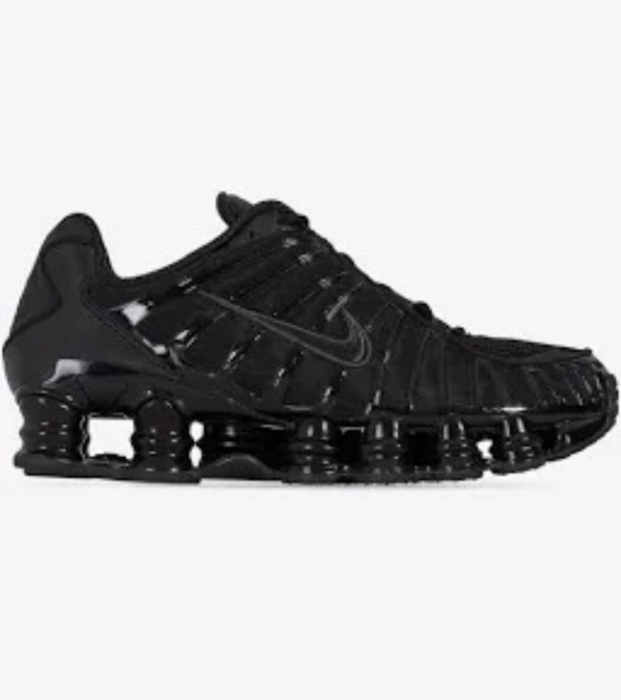

ZAPATILLAS



CALIDAD Nuestras zapatillas están fabricadas con materiales duraderos y resistentes. Por lo general, se utilizan cuero genuino, cuero sintético de alta calidad, mallas transpirables, tejidos técnicos y suelas de goma de calidad. Estos materiales aseguran que las zapatillas sean capaces de soportar el desgaste diario y resistir las tensiones causadas por la actividad física.
PAGOS El principal beneficio para el comprador es la seguridad en la transacción. Al elegir el envío contra reembolso, el comprador solo pagará cuando reciba y el paquete verifique que cumple con sus expectativas.Esto brinda confianza y tranquilidad, especialmente en compras en línea donde no se puede inspeccionar el producto antes de adquirirlo.
Envíos En nuestro compromiso de brindarte la mejor experiencia de compra, nos enorgullece ofrecer envíos rápidos y eficientes.Sabemos lo importante que es para ti recibir tus productos de manera ágil, por lo que nos esforzamos en garantizar que tus pedidos sean enviados con la máxima rapidez.